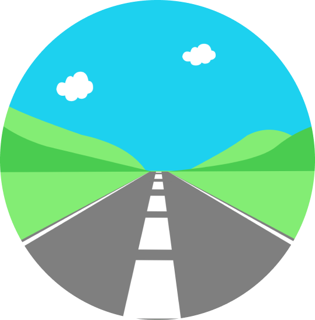

JOYDRIVE
RESPONSIVE MULTI DEVICE
WAT IK HEB GEBRUIKT
- SCENARIO
- DOELEN & BEHOEFTEN
- MUST HAVES & NIVE TO HAVE
- JOB STORIES
- SCREEN FLOW & WIREFLOW
- D.E.T.A.I.L.S
- DESIGN CRITIQUE
Een Responive Multi Media Design voor browser, mobiel en de interface in je auto waarbij je een rijd route kan generen of zelf creëren om met je vrienden een leuk avontuur met de auto te kunnen hebben.
WEEK 1
In week 1 ben ik begonnen met ideeën te bedenken om tot een concept te komen. Dit deed ik doormiddel van een ideegeneratie, scenario's en job stories.
SCENARIO
Doelen
- avond rijden met vrienden
- relaxte route en spannende route rijden
- van 7 tot 12 rijden
- ronde route die zorgt dat je weer thuis komt
Behoeften
- De route moet langs zijn vrienden gaan
- goedkope tankstation op de route
- navigatie route op mobiel
- goede parkeerplaatsen voor pauzes
- restaurants op de route
- lokatie weten van de gebruiker om route vanaf huis te kunnen creëeren.
JOB STORIES
Wanneer ik maar een avond de tijd heb en een relaxt rondje wil rijden met vrienden, wil ik bepalen hoelang de route is en wat de intensiviteit is van de wegen, zodat ik op tijd thuis kom met een relaxte avond achter de rug.
Wanneer ik met me vrienden naar een random locatie wil rijden met een avontuurlijk route door mooie omgevingen. wil ik een route krijgen door een mooie omgeving met een avontuurlijke route naar een random locatie, zodat ik een avontuurlijke rit heb met me vrienden.
Wanneer ik een een avond wil rijden zonder problemen, wil ik pauzes kunnen inlassen om te tanken of eten en de route makkelijk kunnen navigeren, zodat ik geen problemen krijg gedurende mijn reis.
WEEK 2
In week twee ben ik gaan kijken naar functionaliteiten die de job story's zouden kunnen oplossen. Ik ben toen gaan kijken naar digitale producten die deze oplossing gebruiken. Als laatste heb ik 3 screenflows voor deze oplossingen gemaakt.
JOB STORIES OPLOSSINGEN
- route generen of zelf een route kunnen tekenen.
- De route die je tekent laat het aantal km en tijd zien.
- Filter op tijd. Je kan de het aantal uren instellen hoelang je wilt rijden.
- Filter op kilometers. Hierop zou je kunnen inschatten hoelang je ongeveer wilt rijden.
- De route langs je vrienden door adressen van je contacten aan te geven zodat de route daarmee rekening mee houd.
- random route genereren met knop.
- filter op gebieden natuurlijk/steden waardoor je zelf de avontuurlijkheid van je rit kan bepalen
- tankstations op route laten zien of van te voren kunnen instellen.
- etensgelegenheden op route laten zien of van te voren kunnen instellen.
- Route op de navigatie van de auto interface.
FUNCTIONALITEITEN
- 1 Route genereren aan de hand van filters.
- 2 Route langs vrienden
- 3 Onderweg de route aan kunnen passen voor etensgelegenheden, parkeerplaatsen en tankstations
DIGITALE PRODUCTEN
- CALIMATO
- FOOTPATH
- ANWB
- APP
- APP
- WEB
WEEK 3
In week 3 heb ik de opdracht D.E.T.A.L.S gedaan waarbij ik ontbrekende features heb bedacht en die heb ik toen weer verwerkt in wireframes.